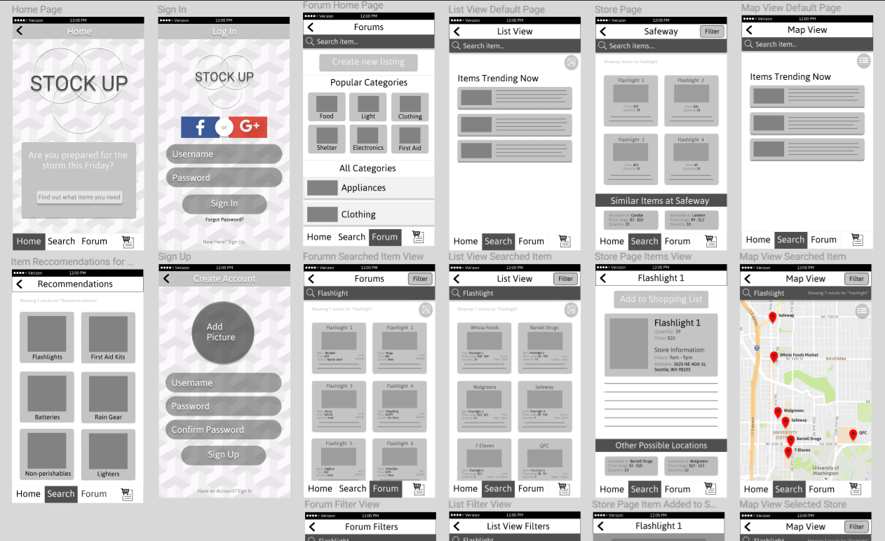
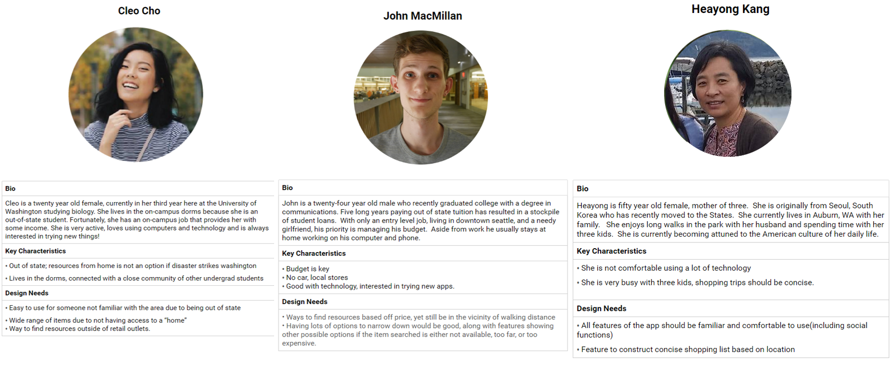

These intial surveys gauged information regarding our problem space facing disasters. Data collected became vital in narrowing our brainstormed ideas and defining our project scope.
In-person surveys conducted with various demographics of individuals geared our solution to their personal needs, expectations, and accessibility concerns.
Paper prototypes were user-tested and iterated upon to design the user interface and compile user-flows. These wireframes were done in Figma and eventually moved to InVision for a low-fidelity prototype.
After confirming basic functionality and proper user flow, full interviews were conducted with people from each target field. We discussed past experiences in disaster situations, our product coupled with the prototype, and future implications of our solution to uncover the next steps.
By enabling users to create and manage their own account, they can generate personalized information within this platform and connect with others.
Displays alerts for any upcoming natural disasters. This is the only feature we display on the page because we want to make sure we catch the user’s attention. Recommendations ensure people are acquiring the correct items when preparing for disasters.
Created this feature as a convenient way to view multiple lines of important information without having to click through a series of buttons and options.
This acts as a notification to inform the user that their actions have gone through, making the app feel responsive.
The shopping list should act as a replacement for any other "list app the user might be using, dipping into our goal of efficiency for the user.